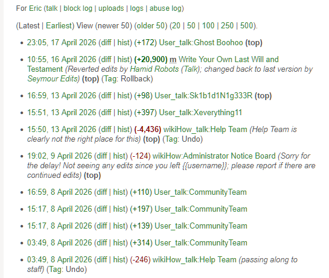

| Account Tier | Male | Female | NB / Unk | Total | Definition & Sociological Notes |
|---|---|---|---|---|---|
| Admins | 186 | 42 | 19 | 247 | Platform leadership heavily male-indexed. High permissions, can edit and revert globally. |
| Boosters | 146 | 234 | 78 | 458 | High female representation in focused domains. Dedicated to specific instructional categories. |
| Verified Authors | 113 | 418 | 156 | 687 | Core validated author base. Educational degree holders and recognized experts. |
| Recent Changes Patrol | 514 | 281 | 148 | 943 | Core gatekeeping cohort. Closely monitor live edits and revert changes. |
| New Editors | 82 | 181 | 49 | 312 | Recent trainees. Standard contributors without direct accepting power. |
| Anonymous IPs | 256 | 229 | 154 | 639 | Unique IP Streams. Contributors who edit without registering on the platform. |
| Total Accounts | 1,297 | 1,385 | 604 | 3,286 | Aggregate Demographics Summary. |
Our methodology categorizes articles into macro and micro "Continuums." This framework maps tasks based on sociological gender-coding (from Female to Male).
| R-0 | R-1 | R-2 | R-3 | R-4 | R-5 | R-6 | R-7 | R-8 | R-9 | |
|---|---|---|---|---|---|---|---|---|---|---|
| Domestic |
Baby Care59
|
Origami42
|
Baking112
|
Laundry68
|
Housek.111
|
Garden94
|
Home/Gd84
|
Dryers72
|
Plumbing188
|
Wiring246
|
| Occupational |
Nursing102
|
Teaching156
|
HR84
|
Hlth Adm68
|
Etiq.109
|
Bus Mgt144
|
Finance92
|
Archit.56
|
Mech Eng48
|
Soft Eng74
|
| Entertain. |
Knitting88
|
Crochet64
|
Decor42
|
Crafts156
|
DIY122
|
Photo104
|
Media92
|
Movies56
|
Hacking134
|
Gaming211
|
| Policy |
Mat. Hlth76
|
Welfare48
|
Rights104
|
Pub Pol86
|
Civic92
|
Legal114
|
Econ Pol58
|
Taxes82
|
Law Enf.121
|
Military98
|
Figure 1: Matrix visualization of 3,958 extracted articles mapped across all 40 modeled sub-continuums based on sociological gender-coding.
To identify and quantify any form of gender disparity, stereotype enforcement, or ideological gatekeeping present within wikiHow's instructional articles.
Stereotypes in the digital space of wikiHow are derived from the gender expectations in offline social reality.
We utilized a targeted search protocol to build the initial corpus of articles mapped to our continuums.
Because accurate classification remains the most important factor in our research, we cross-check and extract identities using three parallel approaches to ensure maximum coverage.
When explicit pronouns are mentioned in the user's bio, we use a deterministic Regex function to extract them. This provides absolute ground truth data.
\b(he/him|she/her)\b
When pronouns are absent, we look for the username or real name. We use Regex to clean special characters, split CamelCase, and isolate initials, then query Genderize.io.
[\^a-zA-Z]
* The validity of Genderize.io is supported by previous demographic studies on Wikipedia and GitHub.
For highly complex accounts, we save the full page as a PDF and use GenAI (e.g., DeepSeek) to output a property-rich JSON evaluating badges, bio context, and hierarchies.
Custom Prompt
To analyze gatekeeping objectively, we extract the exact textual "diff" between the accepted and reverted articles to bypass potentially biased human moderator tags.

Preliminary Tag Rules:
GenAI Semantic Cross-Check: We use DeepSeek
to analyze the context of these diffs (using inherent <ins>,
<del>, .diff-addedline, and .diff-deletedline nodes) and
verify the ideological bias.
To ensure we have no noise or unnecessary articles listed wrongly in the continuums, I manually removed unrelated articles from the dataset.
domestic, baby_care:domestic, electrical_wiring:entertainment, hacking:Platform status is visually verified through unique badges, designating specific administrative and social permissions within the community hierarchy.
WikiHow corporate employees. They oversee site-wide policy enforcement and platform development.
High-level community leaders. They have the final word on reverts and exercise significant gatekeeping authority.
Maintenance specialists focused on rapid-response vandalism control and recent changes patrol.
Social infrastructure roles dedicated to onboarding and guiding new contributors into the community.
Expert contributors recognized for high-volume, high-quality output across specific sub-continuums.
Figure 2: Longitudinal growth of edit volumes (2005–2026). While female and non-binary participation grows, male contributors consistently maintain the highest cumulative edit volume.
Figure 3: Global density of contributors. Maps the geographic baseline for participation, highlighting density disparities primarily concentrated in North America and Europe.
Figure 4: Macro-continuum contribution breakdown. Visualizes the raw disparity between editors, proving male dominance in technical/policy spheres and female majorities in domestic spaces.
Figure 5: Proportional demographic gradients across selected sub-continuums.
Diverging analysis of edits processed by the Recent Changes Patrol.
Visualizing cross-gender policing dyads: Who is reverting whom, and on what type of article?
| Target: Female-Coded | Target: Neutral | Target: Male-Coded | |
|---|---|---|---|
| Perp: Female | 242 | 313 | 648 |
| Perp: Male | 1,568 | 1,024 | 412 |
| Perp: Non-Binary | 22 | 83 | 47 |
Figure 6: Heatmap indicating the volume of aggressive reversions. Notably, male patrollers disproportionately revert edits on Female-Coded articles.
Figure 7: High male reversion rates (right) directly correlate with faster female/NB account abandonment (left).
Do users shift their editing domains over long periods of tenure?
| User (Gender) | Year-by-Year Edits (Domain::Sub-domain) | Measured Shift |
|---|---|---|
| Zack R. (Male) | 2010: dom::baking (151) → 2019: occ.::mech_eng (301) | F-coded (1.6) → M-coded (8.2) |
| AndrejG (NB) | "Wire a Circuit Breaker" (8) → "Int. Law" (5) | Male-Coded → Neutral |
| Lara M. (Female) | "Administer First Aid" (2) → "Local Office" (5) | Female-Coded → Neutral |
| WRM (Male) | 2009: Electrical Wiring (3) → 2012: Baby Care (16) → 2019: Electrical Wiring (11) | M (8.1) → F (2.1) → M (7.6) (Oscillating) |
| Eric (Male) | 2007: Electricity (10) → 2018: Baking (3) → 2024: Electricity (8) | Multi-domain / non-monotonic |
The 3,958 articles analyzed were selected for high relevance to our continuums. While theoretically robust, this represents ~1.5% of wikiHow. Future focus will scale this to the remaining 98.5%.
Deterministic (Regex) offers high surety but low reach. Probabilistic (GenAI/Genderize.io) relies on profile cues (names/bio) which may not reflect true self-identified gender. The goal is to shift toward behavioral context understanding.
Expanding the project to include automated "Shadow Healer" workflows and improved domain-shifting tracking across the entire platform ecosystem.